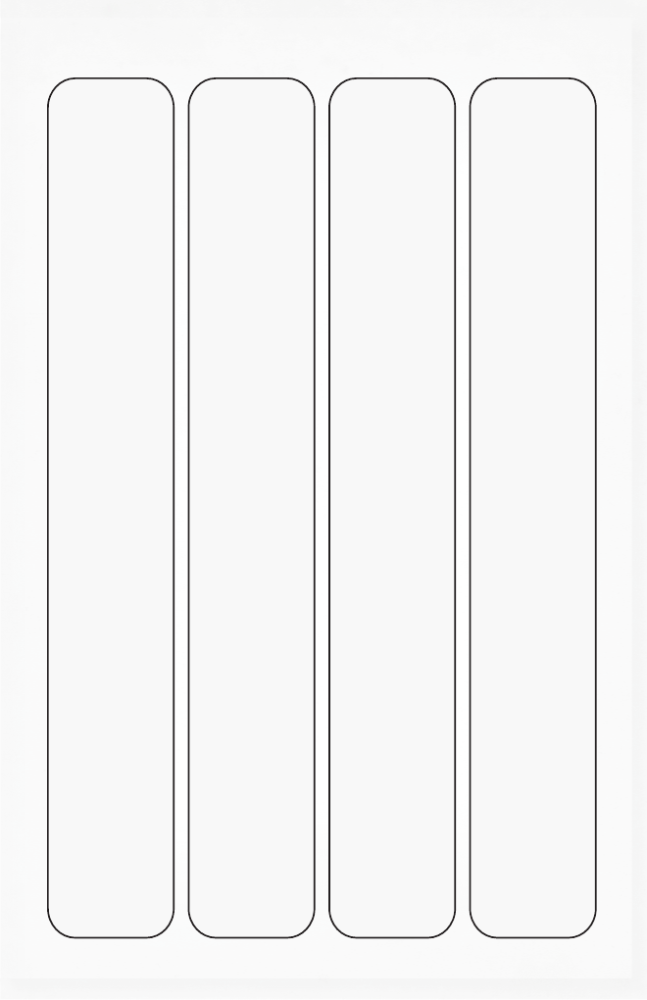

high frequency words
about
after
all
an
as
be
been
but
by
call
could
did
do
each
find
first
get
had
has
have
he
her
him
how
if
into
its
know
long
made
make
many
may
more
no
now
of
one
only
other
over
people
said
she
so
some
that
their
them
then
there
these
they
time
to
two
want
was
way
were
what
when
which
who
would
yes
you
your
19